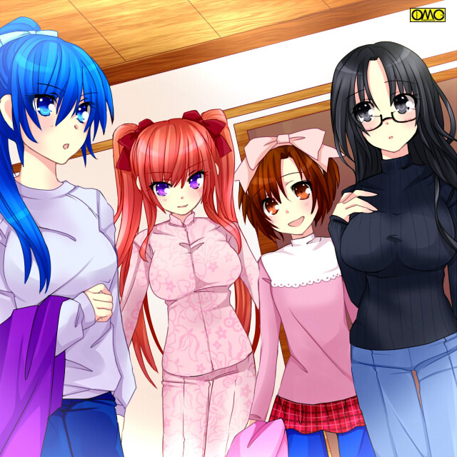

第２２話「一途な恋」
冬休み後半。１／４〜６にかけての二年生全員参加のスキー合宿に、まりあたちは出向いていた。
現在はスキーバスの中。仮にも雪山に向かうため防寒重視で私服での参加が許可されていたので、かなりバラエティに富んだ車内である。
「はぁ。雪国に住んでいるわけじゃないのに、どうしてスキーの練習が必須なんでしょう？」
詩穂理はクラスメートからしたら、比較的珍しい印象のパンツルック。
本人がいうには自宅でさほど珍しくない。特に実家の本屋を手伝うときは必ずパンツルックとのこと。
今回は単純に寒いからだ。セーターは柄物。雪に紛れないようにという考えだ。
「そうだよねー。シホちゃん。美鈴きっと一度滑ったらへとへとだよぉ」
こちらも珍しいイメージになるパンツルックの美鈴。
ただし真っ赤なミニスカートと合わせてで。トップスはやはりセーター。色は白。
雪に紛れそうだがスカートが赤。パンツが青で三色になるようにした。
いわゆる運動神経のない詩穂理。体力のない美鈴は暗澹たる表情だった。
二人そろって暗いオーラを放っていた。
「大げさだなぁ。親睦を深めるための遊びみたいなもんじゃん」
スポーツ万能のなぎさは表情が明るい。
いちばん得意なのは陸上競技。好きなのは水泳だが、ウィンタースポーツにも強かった。
彼女のパンツルックは夏でも定番。
「そういや去年は去年で体育会系の部活で希望者がまとまってスキーに行ったんだよな？ オレは映研の撮影でいかなかったけど」
裕生が乗っかる。
「ああ。僕やなぎさは行ってる」
「えっ？ 二人でっ？」
それまでクラスメイトにして、同じテニス部の長谷部理緒と喋っていたまりあが、耳ざとく食いついた。
スカート派。そして九月の男装騒動以来パンツルックが苦手を通り越して「嫌い」になっていたまりあだが、寒がりのほうが勝り、しぶしぶパンツルックである。
男装騒動の時は音を上げるようにメイドの雪乃は女子には窮屈なメンズを用意した。
それまでほぼスカートしかはいてないため、ズボンに男女の区別があるのを知らなかったのを利用した。
策は当たり男装は一週間で終了。
しかしそれが利きすぎてスキーにもかかわらずスカートでいくと主張。
やむなくレディースパンツの存在を教えてはかせたのである。
もちろんまりあの趣味全開したデザインで上下でかわいらしい花柄。
そのデザインでやっとパンツルックでも着用する気になった。
「やだ。まりあったら」
照れるなぎさ。
「こいつと二人だけなんてそんなわけないだろ。まりあ」
一刀両断でばっさり。クールに否定する恭兵。
さすがの伊達男。自分の決め顔を知っている。
引き締まりつつも甘さのある表情を作る。
それがクラスメイトの女子にまで受けている。
普段から見慣れているはずなのにである。
「それとも、妬いてくれているのかい？」
今度は甘い声でささやように言う。
「きゃーっ」
その「色気」にクラスメイトの女子が思わず嬌声をあげる。
同級生なのにまるっきりアイドルの扱いである。
当人もスター気取りで髪をかき上げる。
「バカなこと言わないで」
よく言えば大人。悪く言うと「八方美人」で、決して他者を悪く言わないまりあが珍しく嫌悪感を隠さない。
一年生の時にこの二人は同じクラス。
まりあを気に入った恭兵は散々付きまとい、挙句「付き合うのが当然」と言わんばかりの態度で接していたので、結果としてまりあに嫌われていた。
それもこの恭兵の「もてるゆえ」の思い上がりだった。
令嬢として大人と接することの多いまりあは、その手の「裏」を敏感に感じ取れる。
辟易としていた。
現在こそなぎさとの関係もあり、露骨な嫌悪感は控えていたが、今回はさすがに出た。
「そうだよ。まりあなんかじゃなくて、ぼくと付き合わない？」
この発言はもちろん優介。
何やら大人の女性のような雰囲気のある言葉だった。
軽く色気に当てられた女子数名が嬌声をあげる。
「覚醒」したかもしれない。
「なんだかいつもより色気あるね」
ほんのりと桜色のほほで水島あずさがいう。
彼女は「女オタク」ではあっても「腐女子」ではなかったはずだ。
「そうかしら？」
言われたまりあは否定的だ。
むしろ「現実逃避」という感じである。
「今回はポーズじゃなくて本気なんじゃない？」
「……だとしても、あの女の子が好きな火野君は優介を相手にするはずないわ」
自分に言い聞かせるようにつぶやく。
バスが到着して宿舎のそれぞれの部屋に。
すでに温めれらていた部屋に荷物を下ろし、寒さから身を守った上着を脱ぐ。
もっともバスの中も暖かった……むしろ大人数で騒いでいて暑いくらいで、現在の姿も大差なかった。
まりあはピンクの花柄の上下。特注品だろうか。
それでもズボンはお気に召さないお嬢様。
美鈴もかなりレアなパンツ姿。ただしミニスカートを重ね履き。
本人の談話によると実家の書店を手伝うときはほぼパンツルックで、人がいうほど珍しくはないという詩穂理。
いうまでもなくなぎさにはパンツルックは通常の服装だった。

このイラストはＯＭＣにって作成されました。
クリエイターのさいばしさんに感謝！
まずは一息入れる。
それから早速着替える。
しかしスキーウエアにも個性が出た。
「しかしアンタらぶれないね」
呆れたように言うのはなぎさ。
「何がですか？」
「色だよ。あんたまた黒なの？ 詩穂理」
若干呆れ気味に言う。それほど黒い服が多かった。
「落ち着くんですよ。それに地味だけど強い色だし」
詩穂理はスキーウエアも黒だった。
「それに私のことです。遭難しかねません。すぐみつけてもらうためにもこの色がベストです」
「自分で言う？」
なぎさが突っ込む。そのまま矛先を小柄な少女に。
「あんたも同じ？ 美鈴」
「えへへへ。派手かな？」
こちらは真っ赤だった。小柄な美鈴だが膨張色の赤は丁度よくマッチしていた。
「そうね。ちょっと派手かしら」
「あんたがいうか！？ まりあ」
指摘されたまりあはやはりピンクのウエア。しかもこれまで花柄。
「だって可愛いんですもの。それになぎささんだっていつも通りじゃない」
「あ、あたしはいいんだよ。青は日本代表チームの色だし」
アスリートらしい（？）いいわけだった。
「みんな着たいものを着ればいいのよ」
いうなりまりあはスポッと『かぶる』
その場の全員が唖然としている。平然としているのは当人だけだ。
ゲレンデに出る。二年生全員がその場にいる。
思い思いのウエアが個性を出す。その中でもひときわ際立つピンクの花柄ウエア。いや。それはまだいい。
問題は首から上。
「お前、高嶺か？」
インストラクターの資格を持つ体育教師。玄田哲章（くろだてつあき）が恐る恐る確認する。
「はぁーい」
確かにまりあ本人の声でその「マスクマン」は返答する。
「あんたどこの覆面レスラーだよ」
なぎさも思わず突っ込む。まりあはいわゆる目出し帽をかぶってきたのだ。
スキーだから目だし帽は不思議でも何でもない。
「だって寒いんですもの」
普段冷暖房完備の家に住んでいて、真夏でも真冬でも自宅では「軽くて可愛い」春の服を着ているまりあである。
それが雪山にきたのである。
もともと寒がりであまりの寒さに可愛さに対するこだわりより、寒さをしのぐ方に行ってしまったである。
「まぁ寒さ対策はいいが、そのデザインはなんだ？」
なんとタカの顔を模していたのである。ご丁寧にくちばしを模したマスクまでしていた。
目元はゴーグルで覆うからこれで肌の露出はゼロになる。
そこまで寒さを嫌がっていた。
それにしてもくちばし型のマスクとは……
「えー。可愛いのに」
「……前はギャルの格好でも同じこと言っていたし、お前の『可愛い』の基準がわからないぞ」
呆れている体育教師。
それが通じないまりあは結構いい根性していた。語り始める。
「先生。知ってます？ タカって一生同じ相手と添い遂げるんですよ」
ここで優介に対して視線を送る。もちろん無視。それどころか恭兵を見ている。
「さらには一年で記憶がリセットされちゃうんですって。と、いうことは記憶をなくすたびに同じ相手に恋をするんですよ。素敵だと思いません？」
じりじりと優介に詰め寄る。
こうなると無視してられない。
いきなりスキーで逃げた。
「あっ。待ちなさい。優介ーっ」
タカ女。まりあも追いかけた。わざわざ口のマスクまでする。
さしづめ優介がうさぎで、それを獲物と狙うタカがまりあだ。
どう見ても捕食者と逃亡者の関係だ。
「あいつら学校の廊下だけじゃ飽き足らずこんなとこでまで」
「いや。先生。怒るポイント違いますから」
浸透しすぎてこんなのんきなことを教師がいう始末だ。
「まったく。あの二人の関係もリセットされたらいいのよ」
優介に「横恋慕」の海老沢瑠美奈がいう。
何の気なしの言葉が、のちに重みをもつ。
二人も課外授業ということで割と早く戻ってきた。
そろったところで生徒による模範演技となり、男子は恭兵。女子はなぎさが指名された。
「先生。オレもできますけと？」
裕生がアピールする。複雑な表情の詩穂理。
裕生が指名されるとなぎさと二人でとなる。
そうでなくても裕生は、スーツアクトレスへのスカウトでなぎさに執心しているのである。
「お前はだめだ。素人にできないようなスタントまで混ぜられては、何の模範にもならん」
どっと笑いが起きる。
裕生の無茶はよく知られていた。
「ちぇーっ。いろいろ見せるネタもあったのに」
やはり何かするつもりだったらしい。苦笑する詩穂理と玄田。気を取り直して体育教師は準備を促す。
「それじゃ二人。上に」
「上にって……これペアリフトですよね？」
なぎさが臆したように言う。
いちばんやさしい。初心者や子供向けのコースのせいか保護者。あるいは指南役など同行者前提か二人乗りだった。
「そうだぞ？ 時間がもったいないから二人まとまって行け」
何の気なしの体育教師の言葉。
これが発せられたとたんに一部からブーイングが起きる。
「なんで？ あたしが恭兵君の隣になりたい」
「いいよね。運動できる人は」
「大して可愛くもないのに恭兵君と一緒なんて許せない」
「運動以外に何もできないくせに」
聞くに堪えない罵詈雑言がなぎさに浴びせられる。
主に恭兵ファンの女子だ。
理由は単純。ヤキモチ。独占欲だ。
その「罵声」もあるが「恭兵の女子ファン」が示した『露骨な敵意』。
裏返して「恭兵への過激な愛」がなぎさには堪えた。
「あ、あたし先に行くね」
いたたまれなくなったなぎさはペアリフトの乗り場に。
「おい。待てよ。勝手に行くな」
意外にも恭兵がそれを止めるが、なぎさは振り返りもせず「逃げるように」乗ってしまった。
「あのバカ」
普段は邪険に扱っているのに追いかける恭兵。
家が近い。幼馴染というだけなのか？
高所恐怖症の人間なら絶対下を向けないような高さを、リフトだから絶対追いつけない距離を保ち上へと移動するなぎさと恭兵。
まるで追いかけっこだ。
「おい。何を意識してんだよ。一緒に乗ればよかっただろ」
たまたまだが二人の前後に客がいない。
それもあり恭兵が声をかける。
（くそ。人の大事なところを蹴り飛ばすような無神経女なんてほっときゃいいのに、なぜかできない）
一応は模範で滑るように言われていたので追いかける形は不自然でないが。
「放っておいてよ。キョウ君はいつもそうだ。たくさんの女の子にちやほやさて。あたしなんて眼中にないんでしょ」
前を向いたままなぎさは叫ぶ。
「合宿でだってそうだった。幼馴染のあたしは無視して他の女の子と」
直前にあった陸上部とサッカー部の合同合宿でのことだ。
まさにその思いがなぎさを苦しめ、ぞしてここで「逃げさせた」のだ。
「はぁ？ お前は何を言ってるんだ？」
本気で訳が分からない。
なぎさはあまりに近すぎる存在で、恭兵はその価値を忘れている。
それゆえだ。
「もういいよ。あたしみたいな大根脚。どうでもいいんでしょ」
いうなり彼女はリフトから飛び降りた。
比較的地面と近かったし、なぎさの運動神経故、着地に成功した。
そして恭兵が着く前に滑り降りていく。
スポーツでは強気でも、恋では臆病ななぎさであった。
残された恭兵は首をかしげていた。
（なんなんだ。あのバカ。「大根脚」？ 何の話……あ。あの時のか）
直前に股間を蹴られた記憶が蘇っていたため、この言葉の意味を思い出せた。
小学生の頃「スカートめくり」から発展して、言わなくていいことまで言った恭兵。
カッとなったなぎさは男子最大の急所を思い切り蹴り上げた。
その直撃を受けた恭兵は、怨嗟の言葉でなぎさを「大根脚」となじり。
大好きな少年に言われた心無い言葉でなぎさは傷ついた。
以来なぎさはスカートで足を出せなくなっていた。
学校制服でスカートを絶対にはかないとならないことになり、以来夏でもストッキング着用が定番になる。
（まさかあいつ、それを気にして夏でもストッキングを？）
すっかり忘れていた一言。
それがずっとなぎさを苦しめていたと気がついて、愕然とした。
こんなありさまの二人の「模範演技」は様にならず。
締まらない状態のままそれぞれ実際に滑ることになった。
とはいえほとんどは遊びであるが。
他のクラスとの交流もある、
「どうかしら？ 高嶺まりあ。同時に滑り降りて、先に水木君を捕まえた方が彼を食事に誘えるというのは」
「うけてたつわ。ただし交換条件として、そのおでこを隠してもらうわ。ゴーグル越しでもまぶしくてたまらないもの」
「きぃぃぃぃっ。人が気にしていることをっ」
隠そうにも前髪が短い上に生え際が上の方である。
だから逆転の発想で長所として前面に押し出してた。
とはいえあまり言われたくない。
「ふふん。あなたこそ空気抵抗のなさような胸でいいわね」
「び、Ｂカップで貧乳呼ばわりっ！？」
普通のサイズなのだが友人にはＣカップと余裕のなぎさ。それと芦谷あすかがいる。
さらにはこの瑠美奈。里見恵子。先輩である栗原美百合。
転校してしまったが澤矢璃子に至っては「本来男子」でありながらそれぞれＤカップ。
とどめが身近な友人てある詩穂理のＧカップ。
こんなメンツと比較されては、若干自分のほうが胸の薄い錯覚もする。
この時点では瑠美奈にそれでやり返されることか定番だった。
犬猿の仲のはずのまりあと瑠美奈だが、何かと関わり合いになるあたり「実は仲が良いのでは」と思うものも多数。
だが当人たちはあくまで「いがみ合って」上へと昇っていく。
「シホちゃん。一緒にすべるにゃ」
まりあのタカマスクを見た後だけに、猫耳程度では奇異に見えなくなっていた恵子が寄ってきた。
むしろ詩穂理がコスプレに毒されすぎて、抵抗が薄らいでいたというべきか。
「里見さんも完全防寒ですね」
こちらは猫を模したマスクだ。
「日焼けはレイヤーにとってはまずいにゃ」
厳密にはこの場合は雪焼け。
肌が黒くなっては調整も難しいので避けていた。
「学校行事じゃなけりゃＵＶカットのお化粧するんだけどニャー」
「日焼け止めを塗るのはいかがです？」
「マスクしたのでそこまでしてないにゃ。どう？ 可愛いでしょ」
生徒会選挙の時や男装騒動でもまりあにかかわっていた恵子。
意外に近いところがあるのかなと詩穂理は思う。
そしてある疑問が浮かぶ。
「もしかしたら高嶺さんのマスクも？」
「うん。あたしが作ってれる人を紹介したら飛びついていたにゃ」
「あはは。やっぱり」
本人もパソコンで検索くらいのスキルはあろうが世間知らず故にこういう発想には至るまい。
あのメイドたちがレクチャーするとは思いにくい。
バニーガールにはしたもののタカ女は。
知りうる限り考えられるのはもう恵子しかいなかった。
「お前……それは本気か？」
思わず突っ込む芦谷あすか。
純白のスキーウェアだ。
空手着の色か。メイドでつけるエプロンの色か。彼女は白を好む。
「うう。先生はＯＫしてくれたもん」
美鈴は子供用のそりを持っていた。
「だからってそれはみっともないぞ」
割と余計なお世話である。
「待たせたな。美鈴」
野太い声の巨漢。２メーター近い大男。大樹がリフトから降りた。
心なしワイヤーが勢いよく戻ったように見えた。
「いくぞ」
例によって用件だけでそっけなく語り終える。
しかしスキー板をハの字にしてゆっくりと滑る。
彼も初心者だったのだ。
「あ、まってよー」
甲高い声の美鈴がそりで寄り添うようについていく。
残された形のあすかである。
なんとなく「敗北感」があった。
「ふぃーっ」
男子の誰にもアプローチをかけず優介は一人で滑っていた。
その目前に優介が性転換したような見た目の女子が滑って来た。
「優介」
双子の姉。亜優だ。普段は肉親ということで別クラス。
別々に行動しているが今回は無関係。
だがこの姉に笑顔はなかった。
「もう誰かに話せた？ 私はまだ言い出せないけど」
「それでいいんじゃない？ まだ仮の話だし」
肉親同士の話だった。
「確かにそうだけど、なんか黙っているのは心苦しくて」
「話たって余計な気を使わせるだけだよ。確定するまでは黙ってよう」
「そ、そうね」
「それにしても父さんもとんでもないお土産持ってきたよなぁ」
今度は優介がぼやく。
「なによ。あんただって気にしてんじゃない」
「そりゃ気にならないはずはないよ。だからもしものために思い出がほしいなって」
「思い出って……まりあと？」
亜優の指摘に言葉が詰まる優介。
以前なら一笑に伏していた。
（なんでかな？ 正月に父さんの話を聞いてから、あいつのことが妙に気になる。嫌っているはずなのに。ぼくの恋愛対象は男の子のはずなのに……）
迷いが逆にとんでもない決意をさせた。
「そうだね。思い出を作りたいよ。『彼ら』と」
怪しげな光がその瞳に宿る。
それは妖艶と表現してよかった。